Как создать будильник? Методы создания интерактивных объектов.
 Помимо заливок и узоров к объектам Visio можно применять достаточно специфические вещи, как например, интерактивность. Что собой представляет интерактивность в Visio - это в первую очередь поведение фигур и действия, которые можно с ними делать. Некоторые такие вещи вы не раз встречали в трафаретах Visio. И на паре примеров можно показать, как с помощью нехитрых действий можно немного "анимировать" фигуры
Помимо заливок и узоров к объектам Visio можно применять достаточно специфические вещи, как например, интерактивность. Что собой представляет интерактивность в Visio - это в первую очередь поведение фигур и действия, которые можно с ними делать. Некоторые такие вещи вы не раз встречали в трафаретах Visio. И на паре примеров можно показать, как с помощью нехитрых действий можно немного "анимировать" фигуры
Отправной точкой в этом будет изменение некоторых параметров Visio. Поясню: Visio по умолчанию, для быстродействия видимо, "время" в формулах обновляется 1 раз в минуту (В ссылках Разработчика об этом не раз упоминается), т.е. 1 раз в 60000 миллисекунд. Вот этот параметр и необходимо будет изменить. Он находится в реестре и его можно изменить “ручками”, либо с помощью *.reg файла.
- Для пользователей Visio 2000.
Адрес: HKEY_CURRENT_USER\Software\Visio\Visio2000\application
Параметр: Animation
Значение: 60000 изменить на 500
- Для пользователей Visio 2002
Адрес: HKEY_CURRENT_USER\Software\Microsoft\Visio\application
Параметр: Animation
Значение: 60000 изменить на 500
- Для пользователей Visio 2003
Адрес: HKEY_CURRENT_USER\Software\Microsoft\Office\11.0\Visio\application
Параметр: Animation
Значение: 60000 изменить на 500
Подробные описания других параметров можно также найти на диске Visio 2000 в папке
"X:\Install\bin\Program Files\Visio\DVS\Visreg.txt" или в папке Visio 2000 на компьютере
"X:\Program Files\Visio\DVS\Visreg.txt"
Теперь время и программе “настроено” и можно начинать.
Для начала создадим пару прямоугольников, для проверки. И затем заходим в ТаблицуФигур одного из прямоугольников (EN:Window>Show ShapeSheet или RU:Окно>Показать ТаблицуФигур). В разделе Трансформация Фигуры (Shape Transform) в ячейку Height вносим изменения:
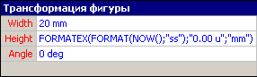
Для Visio 2000 и Visio 2002
=FORMATEX(FORMAT(NOW();"ss");"0.00 u";"mm")
Для Visio 2003
=FORMATEX(FORMAT(NOW(),"ss"),"0.00 u","mm")
и смотрим на поведение фигуры. 1 раз в секунду фигура меняет свой размер. Для другой фигуры можно ввести те же формулы, но поставить в конце /2.
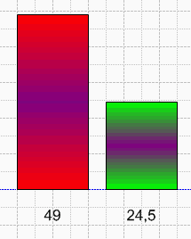
Этот просто пример показывает, что с временем в программе можно работать как с числовыми величинами.
Если все в порядке, то перейдем непосредственно к созданию будильника. Будильник будет состоять из 4 частей:
- Циферблат. Это просто круг с 4 надписями.
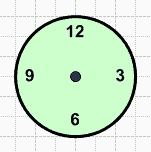
- Секундная стрелка. 1 линия.
Нарисуем вертикальную линию. Откроем ее ТаблицуФигур (EN:ShapeSheet) и в разделе Трансформация Фигуры (Shape Transform) вносим следующие изменения:
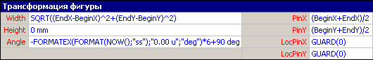
В ячейку Angle:
Для Visio 2000 и Visio 2002
=-FORMATEX(FORMAT(NOW();"ss");"0.00 u";"deg")*6+90 deg
Для Visio 2003
=-FORMATEX(FORMAT(NOW(),"ss"),"0.00 u","deg")*6+90 deg
Для всех версий
В ячейку LocPinX:
=GUARD(0)
В ячейку LocPinY:
=GUARD(0)
Теперь ее достаточно разместить в центр циферблата, и она готова.
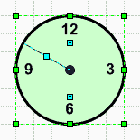
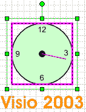
- Минутная стрелка. 1 линия.
Нарисуем вертикальную линию. Откроем ее ТаблицуФигур (EN:ShapeSheet) и в разделе Трансформация Фигуры (Shape Transform) вносим следующие изменения:
В ячейку Angle:
Для Visio 2000 и Visio 2002
=-FORMATEX(FORMAT(NOW();"mm");"0.00 u";"deg")*6+90 deg
Для Visio 2003
=-FORMATEX(FORMAT(NOW(),"mm"),"0.00 u","deg")*6+90 deg
Для всех версий
В ячейку LocPinX:
=GUARD(0)
В ячейку LocPinY:
=GUARD(0)
Теперь ее достаточно разместить в центр циферблата, сделать немного толще секундной стрелки, и она тоже готова.
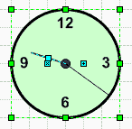
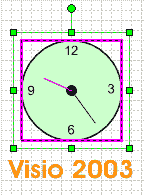
- Часовая стрелка. 1 линия.
Нарисуем вертикальную линию. Откроем ее ТаблицуФигур (EN:ShapeSheet) и в разделе Трансформация Фигуры (Shape Transform) вносим следующие изменения:
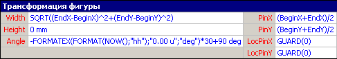
В ячейку Angle:
Для Visio 2000 и Visio 2002
=-FORMATEX(FORMAT(NOW();"hh");"0.00 u";"deg")*30+90 deg
Для Visio 2003
=-FORMATEX(FORMAT(NOW(),"hh"),"0.00 u","deg")*30+90 deg
Для всех версий
В ячейку LocPinX:
=GUARD(0)
В ячейку LocPinY:
=GUARD(0)
Теперь ее достаточно разместить в центр циферблата, сделать еще толще минутной стрелки, и она тоже готова.
Вот часы и готовы.
Теперь будем делать из них будильник. Для этого полученные часы группируем и создаем другие свойства ( EN:Shape>Custom properties… или RU:Фигура>Другие свойства…).
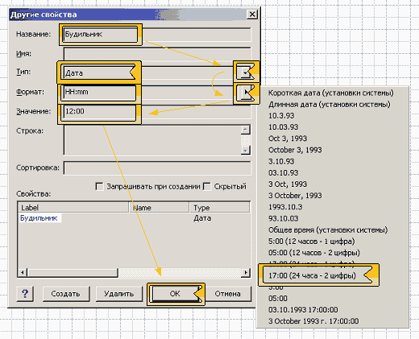
В открывшемся окне вводим Название (EN:Label) (Будильник, например), выбираем Тип: Дата (EN:Type: Date), ставим Формат: 24 часа – 2 цифры (EN:Format: 17:00 ), набираем Значение на 12:00 (EN:Value: 12:00) и нажимаем ОК.
Для продолжения, необходимо узнать ID (уникальный номер) будильника. Для этого это надо выделить и выбрать в меню Формат>Специальное… (EN: Format>Special…).
Его надо запомнить, чуть ниже он понадобится (К примеру ID = 10).
Далее необходимо выбрать циферблат, делается это двойным нажатием на группе, и заходим в его ТаблицуФигур (EN:ShapeSheet). Теперь необходимо создать раздел Ячейки Пользователя. Делается это так: нажимается правой кнопкой мыши и выбираем пункт Вставка раздела… (EN: Insert section…) и в появившемся окне выбираем пункт Ячейки пользователя (EN: User-defined cells), нажимаем ОК, и в новом разделе вносим формулу:
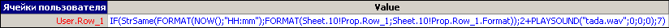
В ячейку User.Row_1:
Для Visio 2000 и Visio 2002
=IF(StrSame(FORMAT(NOW();"HH:mm");FORMAT(Sheet.10!Prop.Row_1;Sheet.10!Prop.Row_1.Format));2+PLAYSOUND("tada.wav";0;0;0);7)
Для Visio 2003
=IF(STRSAME(FORMAT(NOW(),"HH:mm"),FORMAT(Sheet.10!Prop.Row_1,Sheet.10!Prop.Row_1.Format)),2+PLAYSOUND("tada.wav",0,0,0),7)
Где Sheet.10 замените на свой ID (Sheet.ID).
Затем внесите изменение в ячейку раздела Формат заливки (EN: Fill Format).
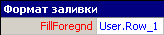
В ячейку FillForegnd:
Для всех версий.
=User.Row_1
Вот и все. Теперь достаточно выделить получившийся будильник, выбрать снова другие свойства и выставить время звонка. В назначенный час будильник будет воспроизводить файл tada.wav (обычно в системе он присутствует) и окрасится в красный цвет. Дополнительно можно сделать стрелку звонка и движение часовой и минутной стрелки более плавными и дату в придачу.
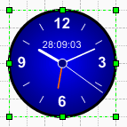
Примеры из статьи.
В начало раздела
Предыдущая статья
Следующая статья
Автор: Ничков Алексей (a.k.a. Digitall)